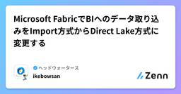

ヘッドウォータースのフィード
https://zenn.dev/p/headwaters
株式会社ヘッドウォータースのテックブログです。 生成AI、LLM、Azureのサービスや資格、IoT、XR系などData&AIとApp modernizeに関して幅広く投稿します！
フィード

LLMFarmという端末上で簡単にAIモデルを動かせるアプリがあったので紹介
ヘッドウォータースのフィード
LLMFarmとはiOS、Mac OSの端末でオンデバイス上で自然言語モデルを動かすことができるアプリです。llama.cppを応用して作成されているそうです。https://llmfarm.tech/ 特徴 1. オープンソースアプリのソースコードがGitHubに公開されてます。App Storeからインストールして使用することもできますが、GitHubからクローンして自分好みにカスタマイズすることもできます。https://github.com/guinmoon/LLMFarm 2. 使える言語モデルの種類llama.cppが対応しているモデルは全て使用...
1日前

技術レポートを書くあなたへ贈るアンチパターン
ヘッドウォータースのフィード
はじめに技術レポートは、技術的な情報を整理し、他者に伝えるための重要な手段です。正確で明確な技術レポートは、プロジェクトの成功に大きく寄与し、チーム内外でのコミュニケーションを円滑にします。しかし、技術レポートを書く際には、いくつかの落とし穴があります。これらの落とし穴、すなわち「アンチパターン」を避けることで、より効果的なレポートを作成することができます。見直してみると若干悪乗りしている感はありますが、技術レポートを書く際によく見られるアンチパターンを紹介します。 技術レポートのアンチパターン書く材料なんかないのに締め切りは来る。そんなことはよくありますよね。中身のな...
2日前

【Azure AI Agent Service】- Azure AI Agent ServiceでAI Agentを作成してみる②
ヘッドウォータースのフィード
執筆日2025/1/9 やることAzure AI Agent Serviceのコードインタプリターを使ってみようかなと。 流れAIエージェント作成プレイグラウンドで実装コードで実装 データの形式以下の形式に対応しています.c,.cpp,.csv,.docx,.html,.java,.json,.md,.pdf,.php,.pptx,.py,.rb,.tex,.txt,.css,.jpeg,.jpg,.js,.gif,.png,.tar,.ts,.xlsx,.xml,.ziphttps://learn.microsoft.com/ja-jp/azur...
3日前

【Azure Communication Service】- メールの送信を試す
ヘッドウォータースのフィード
執筆日2024/01/09 やることAzure Communication Serviceのメール機能を試します。 セットアップ手順Azure Communication Servicesを構築するEmail Communication Servicesを構築する!Azure Coomunication ServiceとEmail Communication Servicesのデータの場所を同一リージョンに設定をお願いします左タブのメール>メールを試すをクリックする無料のAzureサブドメインを設定するをクリックする2構築したEmai...
3日前

Raspberry Pi AI Hat+ (AI Kitの後継機) が出てました
ヘッドウォータースのフィード
はじめに2024年の6月ごろにRaspberry Pi AI Kitが出て「ついにRaspberry PiでもエッジAIを使える！」と私の中で話題になっていましたが、それから4か月後にまさかの後継機、AI Hat+が出てました。何が違うのかを調べました。 Raspberry Pi AI KitとAI Hat+の違い 見た目 AI Kit引用元：https://www.raspberrypi.com/documentation/accessories/ai-kit.html#ai-kit AI Hat+引用元：https://www.raspberrypi.c...
3日前

Power Automateと生成AIを活用して、ZennのPublicationへの招待をしてくれるエージェントを作成
ヘッドウォータースのフィード
やりたいこと全社的にZennへのテック記事投稿を推進しています。去年から沢山のエンジニアが入社されるようになり、ZennのPublicationアカウントに新しいメンバーを招待する機会が増えてきました。今年はさらに増える見込みですので早いうちにエージェントを作成しました。 処理の流れユーザーは所定のTeamsチャネルに以下の要件を満たしたメッセージを投稿 * 「招待」というワードを含める * Zennのuser_idとuser_nameを記載(なるべく区別がつくように分かりやすく)Power Automateがメッセージの投稿を検知して起動メッセージ内に「招...
4日前

Raspberry Pi AI Kitをセットアップして実際に動かしてみる
ヘッドウォータースのフィード
はじめにこの度Raspberry Pi AI Kitを手に入れることができたため、以前から持っていたRaspberry Pi 5と組み合わせてセットアップして、どんな感じで動かせるのかを実際に試してみます。 用意したものRaspberry Pi 5Raspberry PI OS (64-bit)Raspberry Pi AI KitRaspberry Pi 5用アクティブクーラーRaspberry Pi 5（4 GB / 8 GB）の公式ACアダプターに合わせた5.1 V / 5 Aが出力できるカスタムPDO（Power Data Object）仕様のUSB...
4日前

【Azure】- AI Agent/Azure AI Agent Serviceについて
ヘッドウォータースのフィード
執筆日2024/1/8 参考資料https://www.anthropic.com/research/building-effective-agentshttps://blog.cgillum.tech/building-serverless-ai-agents-using-durable-functions-on-azure-e1272882082c AI Agentとは？Anthropicの定義から引用すると..Agents, on the other hand, are systems where LLMs dynamically direct their ...
4日前

Chromium系ブラウザで使える拡張機能の作り方 1
1
ヘッドウォータースのフィード
執筆日2025/01/07 概要年末年始に遊んでみて面白かったのでご紹介。(今更って言われるとつらい)今回はブラウザでテキストを選択してショートカットキーを押すとWeb版ChatGPTが開いて質問する、という拡張機能を作ってみます。 環境自分が普段Microsoft Edgeを使っているため、紹介するコードはEdgeで動作テストしています。（Chrominum系では同じjavascriptが使えるはずなのでChrome等でも動作すると思います） 前提edgeブラウザの拡張機能で開発者モードを有効化（後述）ブラウザでWeb版のChatGPTにログイン ス...
5日前

【Azure】gpt-4o（バージョン：2024-08-06）がプレビュー版である件について
ヘッドウォータースのフィード
gpt-4oバージョンに関する注意事項gpt-4oのバージョン：2024-08-06はプレビュー版のためご注意ください。現時点（2025年1月7日）でGA（一般提供版）として利用可能なgpt-4oのバージョンは、以下の2つです。2024-05-132024-11-20（※日本リージョンでの利用は提供されていません） Azure OpenAI Serviceの最新情報についてAzure OpenAI Serviceの最新情報は、以下のリンクから確認できます。GitHubMicrosoft Learn※英語版のドキュメントは、日本語版よりも正確で更新が早い場合があ...
5日前

Microsoft FabricでのAOAI API呼び出し時のエラーとその解決策
ヘッドウォータースのフィード
執筆日2024年1月7日 発生事象Microsoft FabricのNotebookでAOAI（Azure OpenAI Service）へAPIを呼び出した際に、以下のエラーが発生しました。 原因このエラーは、httpxライブラリのバージョンが原因で発生しました。詳細については以下のリンクから確認できますhttps://stackoverflow.com/questions/79241252/pydantic-wrapper-error-while-invoking-openai-client-on-streamlit-got-an-unexpec 回避策...
5日前

キーバインド変更方法の紹介 QMKファームウェア+PowerToys
ヘッドウォータースのフィード
🎍あけましておめでとうございます🎍皆さん、キーバインドへのご関心はありますでしょうか？私はキーバインドを変更することで業務効率は結構変わると思っている流派です。例えば、こちらの記事などで具体的な効用が語られています。業務効率が上がると聞けば、関心度があがるのではないでしょうか。。!本題です。今回はお正月に整理したキーバインドを紹介します。Windowsが対象です。 キーバインドの変更方法キーバインド変更方法には、大きく３つの方法があると考えています。それぞれファームウェア変更、アプリケーション変更、レジストリ変更です。ファームウェア変更キーボード端末のファームウェア...
6日前

Power BIの目標(プレビュー)ビジュアルを使ってみた
ヘッドウォータースのフィード
久しぶりにPower BIを触ったら、「目標（プレビュー）」というビジュアルがありました。もしかしたら結構前からあったかもですが、使ってみたので紹介。 使い方Power BI Desktopを開いて、ビジュアル一覧からこれを選択。こんな感じのビジュアルがレポート上に入りました。「目標を追加する」を選択。二つありますが、「目標をビジュアルとして追加する」を選択。目標名は必須なので入力。次に現在の値は動的に変更するので、固定値ではなくてデータに接続したいです。「データに接続」を選択すると、現在アップされているレポート一覧が出てくるので対象のレポートを選択...
6日前

Microsoft FabricでBIへのデータ取り込みをImport方式からDirect Lake方式に変更する
ヘッドウォータースのフィード
会社の取り組みとしてZennへの投稿を積極的に行っています。以下の記事で紹介したように、APIを利用してMicrosoft Fabricで投稿状況を可視化しています。年が変わったということもあって、メンテナンスも兼ねてFabric内の構成も変更しました。https://zenn.dev/headwaters/articles/c69811c3ed54c0 変更に至った背景 1. Dataflow Gen2がやけに容量を食って困っている現在社内の勉強用はF2プランを使用しています。プラン的には1番下というのはあるものの、スケールオーバーエラーが頻発するようになりました。...
7日前

【Azure】-Bing Searchを触ってみる
ヘッドウォータースのフィード
執筆日2025/1/1 やることAzure AI Agent Serviceを触っている時に出会ったBing Search.初めましてだったので、勉強したことをまとめようかなと。 Bing Searchとは？MicrosoftのBing Search APIを使用して、アプリケーションやサービスに高度な検索機能を統合するためのサービスです。Web検索、画像検索、ニュース検索など、Bingの強力な検索エンジンを活用した検索機能をAPIで使える。 Bing SearchでできることBing Web SearchBing Image SearchBing New...
11日前
Let's Encrypt 証明書発行でつまずいたこと②
ヘッドウォータースのフィード
環境AWS EC2Ubuntu22.04WebサーバーはApacheDNSサービスはRoute53 何が起きたか旧サーバーから新規サーバーへの移行にあたり、改めてLet's Encryptの証明書を発行をしようとしました。ドメイン名は同じにしていたがグローバルIPアドレスが変更となる仕様でした。ただ、Route53でDNS切り替え（IPアドレスの変更）をしておらず、Let's Encryptの証明書を発行出来ませんでした。 構成簡易構成移行構成（CentOSは既にサポート終了） 初めに試したコマンドLinux環境でLet's Encr...
12日前
Let's Encrypt 証明書発行でつまずいたこと①
ヘッドウォータースのフィード
環境AWS EC2Ubuntu22.04WebサーバーはApache 注意点WebサーバーがApacheでない場合は今回の記事は参考になることはないと思います。Apacheは必ず起動しておくこと。 概要 初めに試したコマンドLinux環境でLet's Encrypt証明書を発行しようとしました。検証で下記のコマンドを実施しました。certbot certonly --agree-tos --apache -w /var/www/html/example -d example.com結果、下記のように失敗するのですが。Some challe...
12日前
DockerのENTRYPOINTとCMD
ヘッドウォータースのフィード
ENTRYPOINTとは？ENTRYPOINTは、コンテナが起動されたときに実行されるデフォルトのコマンドを指定します。ENTRYPOINTに指定されたコマンドは、コンテナが起動されるたびに必ず実行されます。 CMDとは？CMDは、デフォルトのコマンドおよび引数を指定します。CMDはENTRYPOINTと組み合わせて使われることが多く、ENTRYPOINTに指定されたコマンドのデフォルトの引数を提供します。ENTRYPOINTとCMDは、Dockerコンテナの起動時に実行されるコマンドを制御するための強力なツールです。ENTRYPOINTは必ず実行されるコマンドを指定し、C...
12日前
【Azure AI Agent Service】- Tracing機能を試す
ヘッドウォータースのフィード
執筆日2024/12/31 やることAzure AI Agent Serviceには、Tracing機能がある。Tracing機能とは、特定のエージェント実行に関係する各プリミティブの入力と出力を、それが呼び出された順序で明確に確認できる。https://learn.microsoft.com/ja-jp/azure/ai-services/agents/concepts/tracingちょっとよくわからないので触ってみる 参考資料https://github.com/Azure/azure-sdk-for-python/blob/main/sdk/ai/az...
12日前
【Azure AI Agent Service】- Azure AI Agent ServiceでAI Agentを作成してみる①
ヘッドウォータースのフィード
執筆日2024/12/31 やることAzure AI Agent ServiceがAzure AI Foundryで利用可能になりましたー！AI Agentについて理解が浅いので、実際に触りながら学習しようと思います。Bing Searchをナレッジにしようかなと。※プレビュー版のため、挙動が不安定です... 流れAzure環境準備AIエージェント作成プレイグラウンドで実装コードで実装 Azure環境準備必要なリソースは以下です。Azure OpenAIAzure AI Servicesプロジェクト/hubGrounding with Bi...
12日前